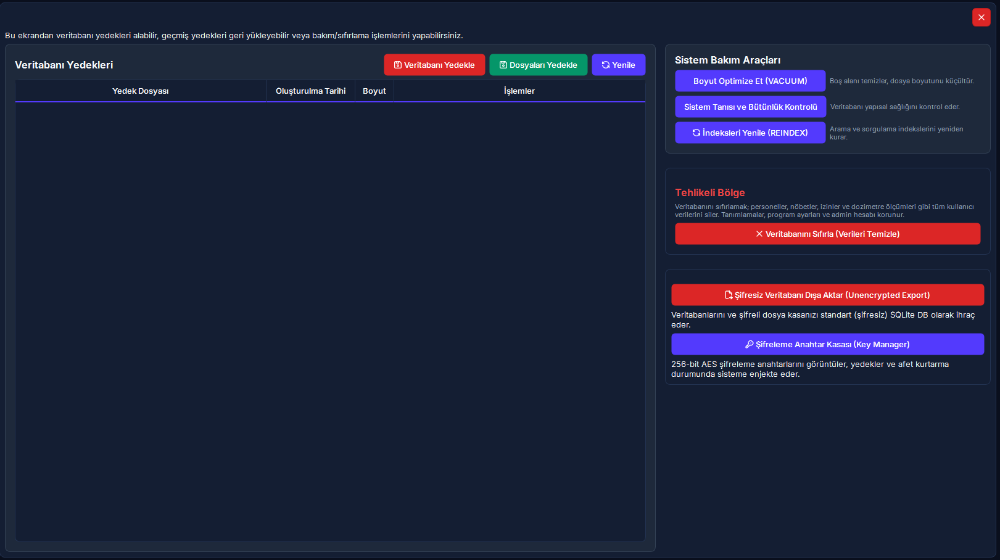
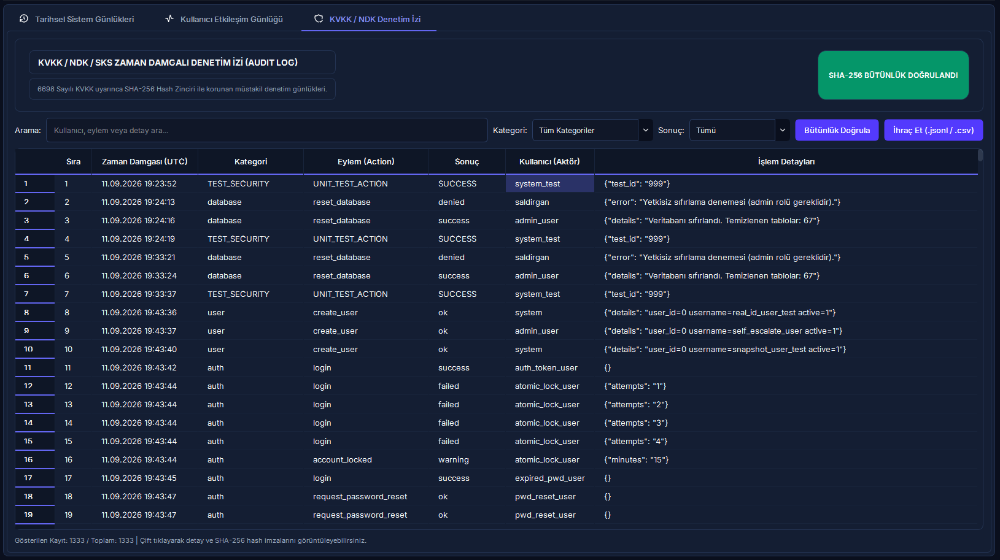

Veritabanı Bakım, Yedekleme & Güvenlik
256-bit şifreli veritabanı ve belge yedekleme, donanım ve kurtarma kartı destekli felaket kurtarma, motor optimizasyonu (VACUUM ve REINDEX), sistem tanısı ve otomatik onarım, 3 kademeli sıfırlama, SHA-256 kriptografik denetim izi ve beklenmeyen hata yakalama işlemlerini yönetmenizi sağlar.
Kısa Reçete: Şifreli Yedekleme ve Kurtarma Anahtarı Güvencesi
Kurumdaki tüm klinik, nöbet, dozimetre ve şifreli evrak verilerinin format veya arıza riskine karşı harici ortamda kurtarılabilir şekilde yedeklenmesi.
[Veritabanı Bakım] ekranında [Veritabanı Yedekle] ve [Dosyaları Yedekle] butonlarına basın; ardından [Güvenlik ve Kurtarma Anahtarı] butonundan kurtarma dosyanızı kaydedip yedeklerle birlikte harici diske kopyalayın.
Veriler ve yüklenen belgeler 256-bit şifrelemeyle zaman damgalı arşivlenir; donanım değişse dahi kurtarma anahtarı veya Cihaz Kimliği desteğiyle sistem eksiksiz geri yüklenebilir.
5N1K Kural ve Arayüz Çözümleme Tablosu
Kurtarma anahtarı, motor bakımı, sıfırlama kalkanı, log sekmeleri ve global hata koruma kuralları.
Kritik Sahada Yanlış Bilinen Kurallar (Mit Avcısı)
Süreç Akış Şeması
Eşleşti mi?"} F -->|Hayır| G["Kurtarma Dosyası / Elle Giriş
veya Cihaz Kimliği Testi"] F -->|Evet| H["Veri Çözülür ve Geri Yüklenir"] G -->|Doğrulandı| H H --> I(["Sayaçlar Eşitlenir: Yeniden Başlatma"]) end subgraph S3 ["3. AŞAMA: BAKIM, TANI VE 3 KADEMELİ SIFIRLAMA"] direction LR J["VACUUM / REINDEX / Sistem Tanısı"] --> K["Bütünlük & Performans Sağlanır"] L["Sıfırlama: Admin + 'SIFIRLA' + Sudo"] --> M["Hareketler Temizlenir, Tanımlar Korunur"] end
- Şifreli Yedekleme ve Anahtar: Veritabanı ve yüklenen evrak kasası 256-bit şifrelemeyle paketlenir; kurtarma kartının harici ortamda saklanması önerilir.
- Felaket Kurtarma (Geri Yükleme): Yedek geri yüklenirken çift onay ve Sudo doğrulaması istenir; anahtar yerel kasadan bulunamazsa kurtarma dosyası veya donanım anahtarı seçeneği açılır.
- Bakım, Tanı ve 3 Kademeli Sıfırlama: Motor bakımı ve tanı sihirbazıyla veri sağlığı korunur; sıfırlama ise yalnızca 3 güvenlik kilidi geçildiğinde hareket verilerini temizler.
Arayüz Ekran Görünümleri


Adım Adım İşlem Rehberi
1. Şifreli Yedek Alma, Dışa Aktarma ve Yedekten Geri Yükleme
- [Veritabanı Bakım] sayfasında [Veritabanı Yedekle] ve [Dosyaları Yedekle] butonlarına tıklayarak anlık şifreli yedekleri oluşturun; tabloda oluşan satırdan [Dışa Aktar] ile harici diske kopyalayın.
- İlk kurulumda [Güvenlik ve Kurtarma Anahtarı] butonuna basıp Sudo doğrulamasının ardından [Kurtarma Dosyası Kaydet (.txt)] ile anahtar kartını yedeklerinizin yanına kaydedin.
- Eski bir yedeğe dönmek için ilgili satırdaki [Yükle] butonuna basın, kritik uyarıyı ve Sudo şifresini onaylayın; sistem yeni kurulmuşsa anahtarı girerek, kurtarma dosyasını seçerek veya [Cihaz Kimliğiyle Çözmeyi Dene] butonuna basarak geri yüklemeyi tamamlayın ve uygulamayı yeniden başlatın.
2. Motor Bakımı, Sistem Tanısı ve Veritabanı Sıfırlama
- Disk alanı kazanmak için [Boyut Optimize Et (VACUUM)], arama hızını artırmak için [İndeksleri Yenile (REINDEX)] butonunu çalıştırın.
- Veri tutarsızlıklarını taramak için [Sistem Tanısı ve Bütünlük Kontrolü] penceresini açın; anomali listelenirse [Otomatik Düzelt ve Onar] butonuna basıp Sudo onayıyla düzeltin.
- Yalnızca yetkili devir veya sıfırlama gerektiğinde kırmızı alandaki [Veritabanını Sıfırla (Verileri Temizle)] butonuna tıklayıp doğrulama kutusuna büyük harflerle SIFIRLA yazın ve Sudo şifrenizle onaylayın.
3. Log Kayıtları ve SHA-256 Denetim İzini İnceleme
- [Log Kayıtları ve Denetim İzleri] penceresinden ihtiyacınıza göre [Tarihsel Sistem Günlükleri], [Kullanıcı Etkileşim Günlüğü] veya [KVKK / NDK Denetim İzi] sekmesini açın.
- Arama, kategori, seviye veya sonuç filtrelerini uygulayın; denetim izinde zincir bütünlüğünü doğrulayın ve herhangi bir satıra çift tıklayarak ham kayıt ile dijital özet detaylarını inceleyin.
- Beklenmeyen bir hata penceresi açıldığında [Hata Detayını Kopyala] veya [E-Posta Gönder] butonlarıyla teknik ekibe ayrıntıları iletip [Kapat] ile çalışmaya devam edin.
Sıkça Sorulan Sorular (SSS)
Yedek geri yüklendikten sonra neden programı kapatıp yeniden açmam gerekiyor?
Veritabanı geri yükleme işlemi tabloları ve kayıt sayaçlarını geçmişteki yedeğe döndürür; ancak açık masaüstü sekmeleri bellekte önceki verileri tutabilir. Tüm ekranların yeni veritabanıyla tam senkronize çalışması için uygulamanın yeniden başlatılması önerilir.
Boyut Optimize Et (VACUUM) ve İndeksleri Yenile (REINDEX) ne sıklıkla kullanılmalıdır?
Yoğun veri girişi veya toplu silme/aktarım işlemlerinin ardından ayda bir kez [Boyut Optimize Et (VACUUM)] çalıştırılması önerilir. Liste ve aramalarda yavaşlama hissedildiğinde veya 3–6 aylık rutin bakımda [İndeksleri Yenile (REINDEX)] çalıştırılabilir.
Beklenmeyen Hata penceresi çıktığında veritabanına kaydedilmiş verilerim silinir mi?
Hayır. Global hata yakalayıcı uygulamanın aniden kapanmasını engeller ve o ana kadar kaydedilmiş tüm verileriniz korunur. Yalnızca o form üzerinde yazıp henüz kaydetmediğiniz taslak alanları tekrar girmeniz gerekebilir.